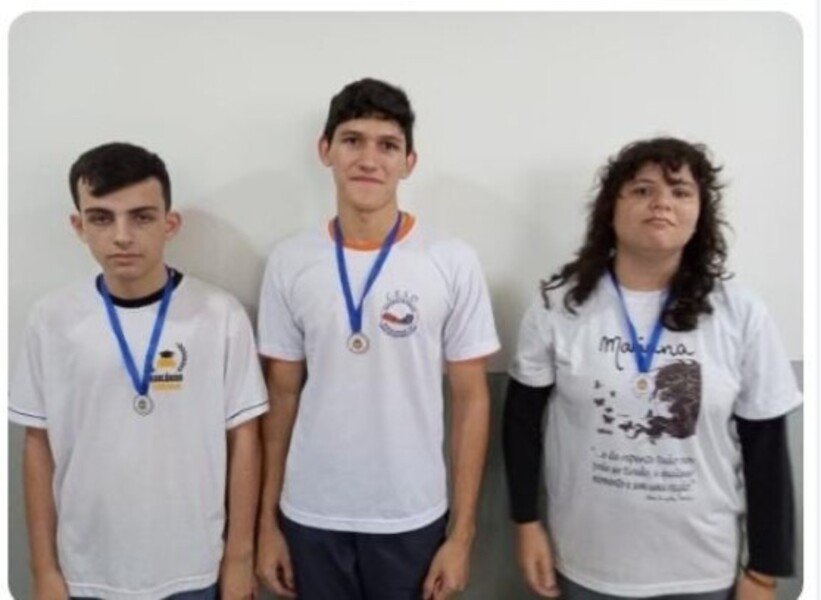
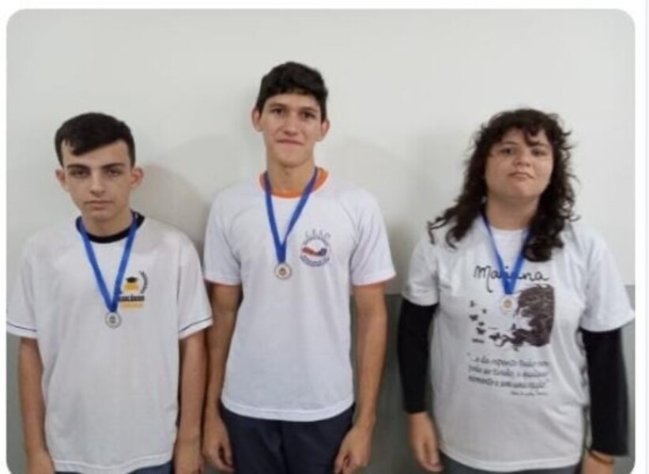

13 de Novembro 2023
Após exatos 3 dias de um campeonato de Xadrez, o Colégio Estadual Santos Dumont se destaca mais uma vez em campeonatos, hoje mesmo aconteceu mais um, campeonato de Tênis de Mesa, contando com a participação de nossos alunos e os alunos do Cescom (Colégio Estadual Constantino Marochi), com direito a plateia e medalhas aos ganhadores.

10 de Novembro De 2023
Hoje no Colégio Estadual Santos Dumont aconteceu um campeonato de Xadrez,contando com a presença de Alunos de outras escolas, como, Escola Municipal Anibal Israel Liutti, Brasileirinho e Ivaina, algo bem fora da rotina, após esse campeonato os alunos que ficaram em até 3º lugar ganharam medalhas,siga a lista abaixo dos ganhadores.
1º Lugar:Estevão (Aluno do Santos Dumont)
2º Lugar:Leticia (Aluna do Santos Dumont)
3º Lugar:Matheus (Aluno da Ivaina)
 
